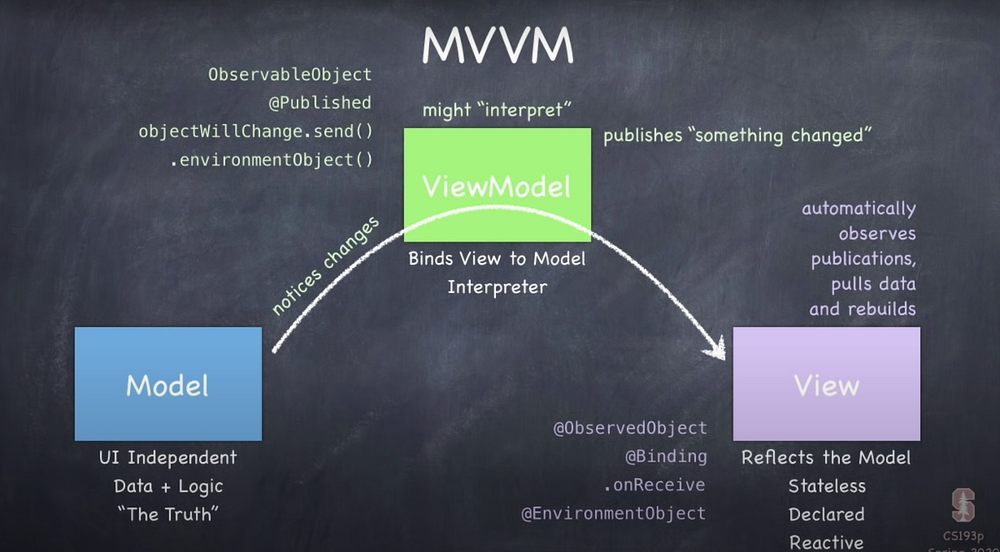

SwiftUI Overview

SwiftUI is a user interface toolkit that let us design app in a declarative way. Many SwiftUI app design using the MVVM (Model-View-ViewModel) architecture. While there are many new concepts, SwiftUI is quite simple to understand by looking at 2 things, the MVVM architecture and the SwiftUI State Management model.
Like any other frontend framework, SwiftUI is all about syncing the user interface (views) and the data in memory (model), the code that manage this connection between views and model is the view-model.
MVVM architecture
The Model is all the code that deal with logic and data, things like business logic and data fetching and storing will be consider part of Model code. Model does not store the data, most of the time, it access database using framework like CoreData or SwiftData, or fetching data from API and store in memory. The Model will be a struct because Swift can not detect change in a class.
So why do we need View-Model instead of connect the Model straight to View? While it possible to do so, we won't have a place to put the connecting code, those connection logic should not stay in the Model or the View either, since View should only store code dealing with views. The Views are code that handle display graphic on screen, animate views, and handle user gesture.
SwiftUI State Management
There are 2 important things to understand in SwiftUI, Binding and Publisher. The Model is a Publisher, it can publish when something change and other code can subscribe to it to recieve notification. Binding is basically pointer for state that can detect change in pointing object and perform action. We need Binding to avoid coping state.
The View-Model conform to ObservableObject so that Views can observe the View-Model for changes. The View-Model does not notify change for every var rather only when the one marked with @Published property wrapper, which is usually the Model. The View can now observe the View-Model by create the View-Model using @StateObject or by reference using @ObservedObject. The View often use Binding to turn user input into temporary state (in View) then send to View-Model using View modifier.